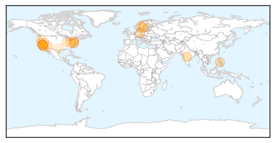
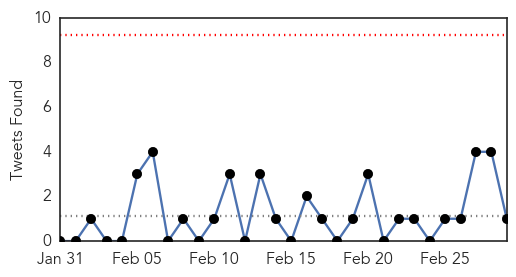
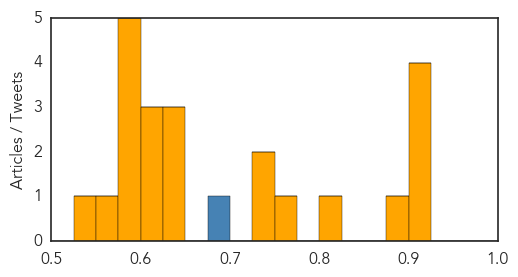

Measles
30-Day Web Trend
5 alerts, 6 warnings

30-Day Twitter Trend
0 alerts, 0 warnings

Article Locations
Article Confidences

Top Articles:
- 0.997
- The measles outbreak and vaccines
- 0.977
- Youngstown News, Unvaccinated U.S. travelers
- 0.976
- Snohomish County has close call with measles-infected visitor
- 0.976
- Sweden confirms measles case --China Economic Net
- 0.974
- Sweden confirms measles case
- 0.936
- Outcomes contradict vaccination opponents
- 0.931
- German toddler dies in measles outbreak
- 0.901
- Why are we still debating vaccines?
- 0.870
- Doubts over vaccine safety persist
- 0.853
- What Happens In Vegas Stays In Vegas, But What If It’s Measles?
- 0.850
- Many Central Coast schools vulnerable to measles outbreaks
- 0.841
- Dana Hills High School
- 0.823
- WBTV 3 News, Weather, Sports, and Traffic for Charlotte, NC
- 0.756
- Measles PSA urges vaccines
- 0.714
- Agencies work to increase childhood vaccination rates
- 0.713
- Vaccines Recommended to Protect Against Measles
- 0.614
- How's your school rank? A new look as state lists percentage of school measles exemptions -- Port Angeles Port Townsend Sequim Forks Jefferson County Clallam County Olympic Peninsula Daily NEWS
- 0.580
- Oregon reconsiders vaccine rules
- 0.565
- Oregon to Consider Banning Exemptions for Vaccines
- 0.523
- Victim of success? Data shows vaccine exemptions rising in region
Top Tweets:
-
No tweets found for Mar 01, 2015
Unknown
30-Day Web Trend
1 alerts, 0 warnings

30-Day Twitter Trend
0 alerts, 0 warnings

Article Locations


Article Confidences
Top Articles:
- 0.917
- Chicago Tribune
- 0.917
- Chicago Tribune
- 0.917
- Chicago Tribune
- 0.911
- Deadly 'Bourbon' virus discovered in US
- 0.888
- Deadly Superbug Linked To Doctors' Offices Kill Infect Half Million Americans Each Year
- 0.817
- Novel bornavirus possibly linked to deaths of German squirrel breeders
- 0.762
- Deadly superbug spreads untested
- 0.748
- Concern over online gonorrhoea treatment
- 0.739
- Health chiefs deny fluoridation has led to thyroid conditions
- 0.643
- Thousands to march in honour of slain Putin opponent Nemtsov
- 0.637
- Jailed PKK leader urges Kurdish separatists to lay down arms against Turkey
- 0.634
- A clear & present danger
- 0.621
- Blood biomarkers found for chronic fatigue syndrome
- 0.607
- The upside and downside of outpatient surgery
- 0.604
- Venezuela imposes visa requirement for US tourists
- 0.596
- Jailed PKK leader urges Kurdish separatists to lay down arms against Turkey
- 0.596
- Thousands of Russians march in memory of murdered Putin critic
- 0.596
- France divided over cooperation with ‘butcher’ Assad
- 0.596
- Deadly bomb blast strikes Egyptian tourist town
- 0.579
- Mali signs draft peace deal with rebels, Tuareg alliance wants more time for consultations
- 0.564
- Mugabe wants entire Africa confiscate land, mines from white
- 0.539
- The mystery of Parkinson’s disease
Top Tweets:
- 0.695
- RT: MERS Madness: March starts with 7 cases 1 death. 3 cases are healthcare workers. Geneva Saudi Arabia has a problem h…